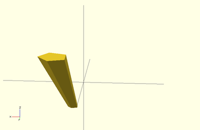

Scales the 2D shape by this value over the height of the extrusion. Scale can be a scalar or a vector:
linear_extrude(height = 10, center = true, convexity = 10, scale=3) translate([2, 0, 0]) circle(r = 1);

linear_extrude(height = 10, center = true, convexity = 10, scale=[1,5], $fn=100) translate([2, 0, 0]) circle(r = 1);
Note that if scale is a vector, the resulting side walls may be nonplanar. Use twist=0 and the slices parameter to avoid asymmetry.
linear_extrude(height=10, scale=[1,0.1], slices=20, twist=0) polygon(points=[[0,0],[20,10],[20,-10]]);
Created with the Personal Edition of HelpNDoc: Free iPhone documentation generator